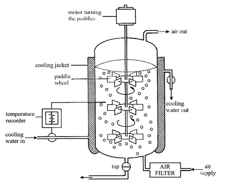

Biology Fact Of The Day:
Biology Video Of The Day:
Syllabus Points
The Nature and Variety of Living Organisms
***Underlined points are triple***
1.1 Understand that living organisms share the following characteristics:
MRSHGREN
Movement
Respiration
Sensitivity
Homeostasis
Growth
Reproduction
Excretion
Nutrition
1.2 describe the common features shared by organisms within the following main groups: plants, animals, fungi, bacteria, protoctists and viruses, and for each group describe examples and their features as follows (details of life cycle and economic importance are not required)
Plants:
- Multicellular organisms
- Some contain chloroplasts for photosynthesis (hence making them autotrophic)
- Cellulose cell walls
- Store carbohydrates as starch or sucrose
- Example: maize
Animals:
- Multicellular organisms
- Do not contain chloroplasts
- No cell walls
- Usually have nervous coordination and are able to move from one place to another
- Often store carbohydrate as glycogen.
- Example: human
Fungi:
- Not able to photosynthesise
- Usually organised into mycelia made of hyphae which contain many nuclei
- Yeasts are unicellular, most other examples are multicellular
- Chitin cell walls
- Saprotrophic: feed by extracellular secretion of digestive enzymes onto food material and absorption of organic products
- Store carbohydrate as glycogen
- Examples: Mucor, yeast
Bacteria:
- Unicellular organisms
- Peptidoglycan cell wall
- No nucleus, but have a circular chromosome of DNA (and sometimes plasmids)
- Some bacteria can photosynthesise
- Most feed off other living or dead organisms
- Some are pathogenic
- Example: Lactobacillus
Protoctists:
- Unicellular organisms
- Some have features like an animal cell (e.g. Amoeba)
- Some have features like plant cells (e.g. Chlorella)
- Some are pathogenic (e.g. Plasmodium)
Viruses:
- Parasitic- can only reproduce in living cells
- Infect every type of living organism
- No cellular structure but have a protein coat
- Contain one type of nucleic acid, either DNA or RNA
- Example: influenza, TMV
1.3 recall the term ‘pathogen’ and know that pathogens may be fungi, bacteria, protoctists or viruses.
Structure and Functions in Living Organisms
***Underlined points are triple***
2.1 describe the levels of organisation within organisms: organelles, cells, tissues, organs and systems.
Organelle: a structure surrounded by a membrane.
Cell: a functional unit of life
Tissue: lots of cells that work together to do a particular job.
Organs: lots of tissues that work together to do a particular job.
Organ system: lots of organs working together to do a particular job.
Organisms: an individual animal, plant, or single-celled life form.
2.2 describe cell structures, including the nucleus, cytoplasm, cell membrane, cell wall, chloroplast and vacuole

2.3 describe the functions of the nucleus, cytoplasm, cell membrane, cell wall, chloroplast and vacuole
Nucleus: contains genetic information, controls cell division
Cytoplasm: where metabolic reactions occur.
Cell membrane: controls the movement of substances into and out of the cell.
Cell wall: strength, shape, support.
Vacuole: full of water & dissolved nutrients (cell sap); maintains structural integrity by maintaining turgor pressure.
2.4 compare the structure of plant and animal cells
^see above table 2.2
2.5 identify the chemical elements present in carbohydrates, protein and lipids (fats and oils)
Carbohydrates: C H O
Protein: C H O N
Lipids: C H O
2.6 describe the structure of carbohydrates, proteins and lipids as large molecules made up from smaller basic units: starch and glycogen from simple sugar; protein from amino acids; lipid from fatty acids and glycerol
2.7 describe the tests for glucose and starch
Glucose:
- Dissolve the substance
- Add 5 drops of Benedict's solution (or until the solution looks blue)
- Heat solution in an 80˚C water bath for 10 minutes
- If glucose is present, the solution will turn brick red; otherwise, it will remain blue.
PRECAUTIONS: tie hair back, wear goggles, use water bath
Starch:
- Add a few drops of iodine
- If it turns blue-black, starch is present; otherwise, there is no starch
2.8 understand the role of enzymes as biological catalysts in metabolic reactions
2.9 understand how the functioning of enzymes can be affected by changes in temperature, including changes due to change in active site
When temperature increases, the kinetic energy increases. At first, this means that the rate of reaction increases, reaching a peak at the optimum temperature. However, when the temperature increases too much, the bonds holding the enzyme together break, meaning the enzyme loses its 3D shape, altering the active site. This means that the enzyme is no longer complimentary to the substrate, meaning it can no longer function.
2.10 understand how the functioning of enzymes can be affected by changes in active site caused by changes in pH
Changes in pH can break the enzyme's bonds, making it lose its 3D shape, altering its active site. This means that the enzyme is no longer complimentary to the substrate, meaning it can no longer function. Enzymes have an optimum pH where they are most effective.
2.11 describe experiments to investigate how enzyme activity can be affected by changes in temperature.
1. Place 3 drops of iodine solution in dimples of a spotting tile.
2. Heat/cool equal volumes of starch suspension and amylase solution to the desired temperature in separate boiling tubes in a water/ice bath.
3. Mix the two substances in another boiling tube in the water/ice bath, and transfer 3 drops of the mixture to the first dimple of a spotting tile.
4. Transfer 3 drops every 30 seconds, until the iodine solution no longer turns blue-black.
5. Record the amount of time elapsed for there to be no colour change.
6. Repeat with desired temperatures.
2.12 understand definitions of diffusion, osmosis and active transport
Diffusion: the movement of substances from an area of high concentration to an area of low concentration, down the concentration gradient.
Osmosis: movement of water molecules from an area of high water potential to an area of low water potential through a semi-permeable membrane.
Active transport: the movement of substances from an area of low concentration to an area of high concentration, against the concentration gradient, requiring energy.
2.13 understand that movement of substances into and out of cells can be by diffusion, osmosis and active transport
2.14 understand the importance in plants of turgid cells as a means of support
A turgid cell is basically a plant cell that is full of water, this increases the volume of the cytoplasm which exerts pressure outwards. This makes the cells stronger so they can support the plant, this also helps the plant grow upwards.
2.15 understand the factors that affect the rate of movement of substances into and out of cells, to include the effects of surface area to volume ratio, temperature and concentration gradient
Higher SA : Volume ratio => faster movement of substances
Higher temperature => faster movement of substances
Steeper concentration gradient => faster diffusion, slower active transport
2.16 describe experiments to investigate diffusion and osmosis using living and non-living systems.
Diffusion:
1. Add potassium permanganate to water
2. Time how long it takes for the solution to be one colour
3. Increase temperature as desired, observe effects
Osmosis:
1. Place a drop of water on one microscope slide, and a drop of concentrated (Molar) sucrose solution on another
2. Obtain two squares of the inner epidermis from an onion
3. Transfer one square onto the slide with water, and the other to the sucrose solution
4. Place another drop of the correct solution on the respective slides, on top of the onion sample
5. Cover with a cover slip
6. Observe samples under a microscope
7. Cells in the water will remain/become turgid; cells in sucrose solution will start to plasmolyse
2.17 describe the process of photosynthesis and understand its importance in the conversion of light energy to chemical energy
Plants are the producers in the food web, and convert light energy to chemical energy.
2.18 write the word equation and the balanced chemical symbol equation for photosynthesis
Carbon Dioxide + Water → Glucose + Oxygen
6CO2 + 6H2O → C6H12O6 + 6O2
2.19 understand how varying carbon dioxide concentration, light intensity and temperature affect the rate of photosynthesis
Higher CO2 concentration: faster photosynthesis until a point where the rate remains the same.
Higher light intensity:faster photosynthesis until insufficient reactants.
Higher temperature: faster rate until optimum temperature of enzymes
2.20 describe the structure of the leaf and explain how it is adapted for photosynthesis
Waxy cuticle: relatively transparent to allow light through to chloroplasts for photosynthesis.
Upper epidermis: relatively transparent to allow light through to chloroplasts for photosynthesis.
Palisade mesophyll: contain palisade cells which have many chloroplasts.
Spongy mesophyll: many stomata to allow CO2 to diffuse into the leaf.
Lower epidermis: guard cells that allow CO2 to diffuse in.
Thin: short diffusion distance for CO2.
Large surface area: high rate of diffusion of CO2, absorb more light.
2.21 understand that plants require mineral ions for growth and that magnesium ions are needed for chlorophyll and nitrate ions are needed for amino acids
Magnesium ions: Deficiency => leaves turn yellow because not enough chlorophyll for chloroplasts
Potassium ions: enzymes for respiration & photosynthesis, deficiency => leaves turn yellow with dead spots
Nitrate ions: proteins (including DNA), deficiency => stunts growth, old leaves turn yellow
Phosphate ionsPhosphate ions: DNA, cell membranes, deficiency => poor root growth, younger leaves turn purple
2.22 describe experiments to investigate photosynthesis, showing the evolution of oxygen from a water plant, the production of starch and the requirements of light, carbon dioxide and chlorophyll
Oxygen and requirement of light:
1. Obtain 3 samples of pondweed
2. Place these sample in test tubes filled 3/4 with hydrogencarbonate indicator
3. Fill 3/4 of one more test tube with hydrogencarbonate indicator
4. Place bungs on top of all 4 test tubes
5. Wrap one of the pondweed test tubes completely with black paper, ensuring no light can enter.
6. Wrap another with a translucent material, limiting the entry of light.
7. Place all 4 test tubes on a test tube rack
8. Shine a light from a set distance away from all four test tubes.
9. Leave the apparatus for at least 2 hours.
10. Observe the colour change of the hydrogencarbonate indicator
11. Obtain a glowing splint, and quickly expose it to the test tube with pondweed and no light obstruction. If it relights, oxygen is present.
Results:
Light = purple
Dim light = orange
Dark = yellow
Control = orange
Production of starch and requirement of chlorophyll
1. Obtain a plant with green leaves and a plant without green leaves.
2. Destarch both plants by leaving them in a dark cupboard with no light for at least 48 hours.
3. Leave the plants in the light for 3 hours.
4. Obtain a leaf sample from each plant
5. Boil both leaves in separate beakers in water
6. Boil both leaves in ethanol (using a water bath)
7. Soften the leaves in cold water.
8. Place samples on a spotting tile, add a few drops of iodine.
9. If starch is present, the leaf will turn blue-black.
2.23 understand that a balanced diet should include appropriate proportions of carbohydrate, protein, lipid, vitamins, minerals, water and dietary fibre
2.24 identify sources and describe functions of carbohydrate, protein, lipid (fats and oils), vitamins A, C and D, and the mineral ions calcium and iron, water and dietary fibre as components of the diet
Carbohydrate: broken down to glucose, which is used in respiration (e.g. rice)
Protein: growth & repair; broken down to amino acids that are assimilated (e.g. beef)
Lipid: long-term storage of energy; insulation (e.g. butter)
Vitamin A: cell growth; seeing in dim light; healthy skin, hair and tissues (e.g. carrots)
Vitamin C: formation of collagen; cell membranes; aids iron absorption; resistance to infection (e.g. orange)
Vitamin D: promotes absorption of calcium & phosphates (e.g. Sunlight)
Iron: component of haemoglobin, used for the transportation of oxygen. (e.g. beef)
Calcium: strong bones and teeth; normal blood clotting; nervous system function (e.g. milk)
Water: maintain turgidity of cells (e.g. water)
Dietary fibre: pushes food through the bowels, preventing constipation and bowel cancer (e.g. lettuce)
2.25 understand that energy requirements vary with activity levels, age and pregnancy
Activity levels: more active = more energy
Age: adolescents = more, adults = less (with exceptions)
Pregnancy: more
2.26 describe the structures of the human alimentary canal and describe the functions of the mouth, oesophagus, stomach, small intestine, large intestine and pancreas
Teeth: chew food into smaller pieces- mechanical digestion increases surface area for enzymes (such as amylase, which is found in the mouth, produced in salivary glands)
Salivary glands: produces saliva, which makes chewed food into a bolus; produces salivary amylase.
Tongue: moves food around the mouth; tastes food.
Oesophagus: peristalsis- waves of muscular contraction- push food to the stomach.
Stomach: stomach acid kills microbes; protease (pepsin) digests proteins.
Small intestine: food pushed along by peristalsis; enzymes digest food chemically; small nutrients absorbed (contain many villi).
Duodenum: bile pumped in at the duodenum (more information about bile in 2.30); contains many digestive enzymes (protease, amylase, maltase, lipase)
Large intestine: absorbs water
Pancreas: secretes enzymes and hormones.
Rectum: stores faeces.
Anus: egests faeces.

2.27 understand the processes of ingestion, digestion, absorption, assimilation and egestion
Ingestion: taking food into the body.
Digestion: large insoluble molecules of food are broken down into smaller ones.
Absorption: process where soluble molecules produced by digestion are taken from the gut into the bloodstream.
Assimilation: assembly of amino acids to create more complex proteins.
Egestion: removal of undigested material (food)
2.28 explain how and why food is moved through the gut by peristalsis
How: waves of muscular contraction push food along the gut.
Why: organism is not always upright, so gravity cannot bring it down.
2.29 understand the role of digestive enzymes, to include the digestion of starch to glucose by amylase and maltase, the digestion of proteins to amino acids by proteases and the digestion of lipids to fatty acids and glycerol by lipases
Amylase: polysaccharide → maltose
Maltase: maltose → glucose
Protease: protein → amino acids
Lipase: lipid → fatty acids & glycerol
2.30 understand that bile is produced by the liver and stored in the gall bladder, and understand the role of bile in neutralising stomach acid and emulsifying lipids
Bile is alkali, and thus neutralises stomach acid in the duodenum (first part of the small intestine). This provides the optimum pH for enzymes in the duodenum (slightly alkali). Bile also emulsifies lipids, making large globules of fat into smaller droplets, increasing surface area for lipases.
2.31 describe the structure of a villus and explain how this helps absorption of the products of digestion in the small intestine
Structure:
- finger-like protrusions from the walls of the small intestine.
- Many => large surface area for diffusion
- Rich capillary network => large surface area + concentration gradient maintained → diffusion
- Lacteal => absorb lipids
- Microvilli => increase surface area for diffusion
- One cell thick => short diffusion distance
2.32 describe an experiment to investigate the energy content in a food sample.
1. Fill a boiling tube with 20cm3 of water, and hold this in place at a 45˚ angle using a clamp stand.
2. Measure the temperature of the water using a thermometer
3. Weigh the food sample using a balance.
4. Spear the food on a mounted needle.
5. Hold the food in a Bunsen burner until it ignites.
6. When the food catches fire, hold it under the boiling tube.
7. Hold the food under the boiling tube until it will no longer burn, reigniting it if necessary.
8. Measure the final temperature of water.
9. Calculate the energy content of food.
Improvements for the experiment:
- Use a calorimeter instead
- Hold the food closer to the boiling tube
- Pump oxygen to food when burning for more complete combustion.
2.33 understand that the process of respiration releases energy in living organisms.
2.34 describe the differences between aerobic and anaerobic respiration
Aerobic requires oxygen, anaerobic does not.
Aerobic produces ATP, anaerobic ADP (Aerobic produces more energy)
Different waste products.
2.35 write the word equation and the balanced chemical symbol equation for aerobic respiration in living organisms
glucose + oxygen → carbon dioxide + water
C6H12O6 + 6O2 → 6CO2 + 6H2O
2.36 write the word equation for anaerobic respiration in plants and in animals
Plants: glucose → carbon dioxide + ethanol Animals: glucose → lactic acid
2.37 describe experiments to investigate the evolution of carbon dioxide and heat from respiring seeds or other suitable living organisms.
Carbon dioxide:
1. Fill 1/3 of a boiling tube with hydrogencarbonate indicator solution
2. Place a gauze platform a few cm above the hydrogen carbonate indicator solution.
3. Place small organisms (such as germinating seeds) on the platform.
4. Place a rubber stopper on the boiling tube.
5. Leave the apparatus for a few hours.
6. The indicator should turn yellow, indicating carbon dioxide production.
Heat:
1. Soak some peas in water for 24 hours so they start to germinate.
2. Boil another batch of peas to kill them.
3. Wash both sets of peas in a 1% bleach solution to disinfect them.
4. Rinse the peas twice in distilled water to remove bleach.
5. Place each set of peas in an inverted vacuum flask, leaving some air in each flask.
6. Insert a thermometer into the centre of the peas, and block the aperture with cotton wool.
7. Measure temperature change.
2.38 understand the role of diffusion in gas exchange
In the alveoli, oxygen diffuses into the bloodstream, carbon dioxide diffuses into the alveoli.
2.39 understand gas exchange (of carbon dioxide and oxygen) in relation to respiration and photosynthesis
Respiration: glucose + oxygen → carbon dioxide + water
Photosynthesis: carbon dioxide + water → glucose + oxygen
2.40 understand that respiration continues during the day and night, but that the net exchange of carbon dioxide and oxygen depends on the intensity of light.
Day: photosynthesis more than respiration → net carbon dioxide intake Night: respiration more than photosynthesis → net carbon dioxide output
2.41 explain how the structure of the leaf is adapted for gas exchange
Waxy cuticle: relatively transparent to allow light through to chloroplasts for photosynthesis.
Upper epidermis: relatively transparent to allow light through to chloroplasts for photosynthesis.
Palisade mesophyll: contain palisade cells which have many chloroplasts.
Spongy mesophyll: many stomata to allow CO2 to diffuse into the leaf.
Lower epidermis: guard cells that allow CO2 to diffuse in.
Thin: short diffusion distance for CO2.
Large surface area: high rate of diffusion of CO2, absorb more light.
2.42 describe the role of stomata in gas exchange
Stomata area opened/closed by the guard cells.
When guard cells are turgid (during the day), the stomata open. At night, the guard cells become flaccid, and so the stomata close.
2.43 describe experiments to investigate the effect of light on net gas exchange from a leaf, using hydrogen-carbonate indicator
See 2.22
2.44 describe the structure of the thorax, including the ribs, intercostal muscles, diaphragm, trachea, bronchi, bronchioles, alveoli and pleural membranes
Ribs: bones that protect the lungs and heart; move up and out when the organism inhales, and tucks in when the organism exhales (this is controlled by the intercostal muscles).
Intercostal muscles: when the organism inhales, the external intercostal muscles contract, internal intercostal muscles relax, decreasing pressure in the lungs, sucking air in, and pulling the ribs up and out (and vice versa).
Diaphragm: a shallow, dome-shaped muscular partition separating the thorax from the abdomen. Flattens when the organism inhales, and returns to its dome shape when the organism exhales.
Trachea: stretch from the larynx to the bronchi, reinforced by C-shaped rings of cartilage.
Bronchi: tubes leading from the trachea to each lung.
Bronchioles: tubes that divide from the bronchi.
Alveoli: microscopic air sacs where gas exchange with the blood takes place.
Pleural membranes: Thin, moist membranes that form a continuous envelope around the lungs, creating an airtight seal.
2.45 understand the role of the intercostal muscles and the diaphragm in ventilation
Inhaling:
- External intercostal muscles contract
- Internal intercostal muscles relax
- Diaphragm flattens
- Pressure in the lungs decreases, sucking air in
Exhaling:
- External intercostal muscles relax
- Internal intercostal muscles contract
- Diaphragm returns to its dome shape
- Pressure in the lungs increases, pushing air out.
2.46 explain how alveoli are adapted for gas exchange by diffusion between air in the lungs and blood in capillaries
Large surface area => lots of diffusion
One cell thick => short diffusion distance
Moist membranes => dissolve gases, allowing faster diffusion
Rich capillary network => large surface area + concentration gradient
Many => more diffusion
2.47 understand the biological consequences of smoking in relation to the lungs and the circulatory system, including coronary heart disease
Lungs:
- Cilia in the trachea and bronchioles damaged by tar, leading to infections (e.g. bronchitis)
- Surface area of alveoli reduced by tar, which breaks down and fuses the walls, leading to emphysema
Circulatory system
- Coronary arteries are among the narrowest in the body
- Can easily be blocked by a build up for fatty substances
- Smoking increases blood pressure and increases the chances of vessels clotting
- If the coronary vessel clots, blood cannot reach the cardiac muscle => No glucose or oxygen for respiration, waste products cannot be removed.
- If the cardiac muscle cannot respire, it does not have energy to contract
- This leads to cardiac arrest and heart attack
2.48 describe experiments to investigate the effect of exercise on breathing in humans.
1. Test subject sits quietly for 5 mins, ensuring they are completely relaxed.
2. Normal breathing rate taken by counting the number of breaths in a minute.
3. Repeat step 2 every minute until a steady breathing rate is found.
4. Person carries out vigorous exercise.
5. Breathing rate taken again.
6. Continue to measure breathing rate until normal is reached again.
2.49 understand why simple, unicellular organisms can rely on diffusion for movement of substances in and out of the cell
SA:Vol ratio is large enough, diffusion distance short enough, for substances to enter/exit quickly.
2.50 understand the need for a transport system in multicellular organisms
Diffusion not fast enough, therefore substances must be transported around the body via a transport system.
2.51 describe the role of phloem in transporting sucrose and amino acids between the leaves and other parts of the plant
- Formed by cells arranged end-to-end
- At the end of each cell is a cross-wall of cellular (sieve plate)
- Cytoplasm extends through the holes in the sieve plates, making a long sieve tube with no nucleus
- Controlled by companion cells along the side
2.52 describe the role of xylem in transporting water and mineral salts from the roots to other parts of the plant
- Water enters the root hair cells by osmosis
- Capillary action draws water up the xylem
- Has thick lignin walls
2.53 explain how water is absorbed by root hair cells
Osmosis: the movement of water molecules from an area of high water potential to an area of low water potential.
2.54 understand that transpiration is the evaporation of water from the surface of a plant
2.55 explain how the rate of transpiration is affected by changes in humidity, wind speed, temperature and light intensity
Humidity: increase in humidity decreases the rate of transpiration since the concentration gradient reduces.
Wind speed: increase in wind speed increases rate of transpiration since the concentration gradient for diffusion is maintained.
Temperature: increase in temperature increases the rate of transpiration since water molecules will have more kinetic energy and are more likely to escape into the atmosphere.
Light intensity: increase in light intensity increases the rate of transpiration since it causes the stomata to open.
2.56 describe experiments to investigate the role of environmental factors in determining the rate of transpiration from a leafy shoot
Use a potometer, which measures the rate of uptake of water in a plant or the rate of transpiration.
Version 1: Weight potometer:
- Measure the rate of loss of mass, ensuring that there is a poly(ethene) back covering the pot (stops mass from being lost by carbon dioxide from the respiration of microorganisms)
Version 2: Volume potometer:
- Use a capillary tube
- Measure the time taken for the air bubble to move along the scale (for a set distance)
- Connect the capillary tube to the leafy shoot using rubber tubing
2.57 describe the composition of the blood: red blood cells, white blood cells, platelets and plasma
Red blood cells: carry oxygen around the body.
White blood cells: fight infection.
Platelets: clot blood, preventing blood loss.
Plasma: liquid part of blood, slightly yellowish in colour (visible after centrifuging)
2.58 understand the role of plasma in the transport of carbon dioxide, digested food, urea, hormones and heat energy
That stuff dissolves into plasma.
2.59 explain how adaptations of red blood cells, including shape, structure and the presence of haemoglobin, make them suitable for the transport of oxygen
Shape: Bioconcave => large surface area.
Structure: No nucleus => larger surface area for oxygen; thin = short diffusion distance.
Haemoglobin: binds with oxygen and transports oxygen around the body.
2.60 describe how the immune system responds to disease using white blood cells, illustrated by phagocytes ingesting pathogens and lymphocytes releasing antibodies specific to the pathogen
Phagocytes: engulf and digest pathogens.
Lymphocytes: produce antibodies and antitoxins that target antigens.
- 'Flag' antigens
- Prevent pathogens from dividing/reproducing
- Clump pathogens together for phagocytes
- Cause bacteria to burst open
2.61 understand that vaccination results in the manufacture of memory cells, which enable future antibody production to the pathogen to occur sooner, faster and in greater quantity
2.62 understand that platelets are involved in blood clotting, which prevents blood loss and the entry of micro-organisms
- Exposure to air stimulates the platelets and damaged tissue to produce a chemical that turns the soluble plasma protein fibrinogen into the insoluble protein fibrin.
- The fibrin forms a network which prevents further loss of blood and entry of pathogens
- The clot develops a scab, which protects damaged tissue while new tissue grows.
2.63 describe the structure of the heart and how it functions
1. Blood enters the atria, and cannot pass into the ventricles yet because the bicuspid (mitral) and tricuspid valves are closed.
2. Atrial systole increases the pressure in the atria, opening the valves. Blood flows from the atria into the ventricles.
3. When the ventricles are full, ventricular systole (and atrial diastole) occurs, increasing the blood pressure in the ventricles, closing the bicuspid and tricuspid valves.
4. Eventually the pressure forces open the semilunar valves at the base of the aorta and pulmonary artery.
5. As the ventricles empty, high pressure in the aorta and pulmonary arteryclosethe semilunar valves in these blood vessels. The cycle begins again as the atria start to be filled with blood.
2.64 explain how the heart rate changes during exercise and under the influence of adrenaline
Goes up and up.
2.65 describe the structure of arteries, veins and capillaries and understand their roles
Arteries:
- Carry blood from the heart to the rest of the body
- Most carry oxygenated blood
- Pumped out by ventricles, meaning there is a lot of pressure on
- Small lumen (to maintain high pressure)
- Thick layers of muscle fibres and elastic tissue so that the walls can stretch and recoil to push blood along
Veins:
- Carry blood from the rest of the body to the heart
- Most carry deoxygenated blood
- Pressure of venous blood is lower than arteries
- Must allow blood to pass through easily
- Must prevent blood from flowing in the wrong direction
- Thin walls with little muscle and elastic tissue
- Large lumen
- Valves to prevent backflow
Capillaries:
- Carry blood through organs, bringing blood close to every cell in the organ
- Substances transferred between the blood in the capillary and the cells must 'fit' between cells
- Capillary walls one cell thick
2.66 understand the general structure of the circulation system to include the blood vessels to and from the heart, the lungs, the liver and the kidneys.

2.67 understand the origin of carbon dioxide and oxygen as waste products of metabolism and their loss from the stomata of a leaf
Carbon dioxide: waste product of respiration, enters the leaf from the stomata.
Oxygen: waste product of photosynthesis, exits the leaf from the stomata.
2.68 recall that the lungs, kidneys and skin are organs of excretion
2.69 understand how the kidney carries out its roles of excretion and osmoregulation
Excretion:
- Amino acids contain nitrogen, which is toxic to the body
- The liver converts ammonia into urea
- Urea is filtered from the bloodstream and mixed with water to form urine
Osmoregulation:
- When blood is to concentrated, the pituitary gland secretes ADH
- ADH makes the collecting ducts in the nephrons more permeable to water
- More water is reabsorbed into the bloodstream, diluting it
- Urine becomes more concentrated
- When blood becomes too dilute, the opposite happens.
2.70 describe the structure of the urinary system, including the kidneys, ureters, bladder and urethra
Kidneys → Ureters → Bladder → Urethra
2.71 describe the structure of a nephron, to include Bowman’s capsule and glomerulus, convoluted tubules, loop of Henlé and collecting duct
Bowman's capsule: surrounds the glomerulus; cells of the Bowman's capsule help restrict which substances pass into the nephron. It is separated from the glomerulus by a basement membrane.
Glomerulus: ball of capillaries surrounded by the Bowman's capsule. Arterioles bring blood to the capillaries, and since capillaries are much smaller in diameter, there is high pressure on the blood in the arteriole flowing into the glomerulus, forcing fluid from the blood to flow through the capillaries and Bowman's capsule.
Convoluted tubules: proximal convoluted tubule is the first coil, where all the glucose is absorbed, as well as ions like Na+ , Cl- , K+, and water; distal convoluted tubule is the second coil (after the loop of Henlé), where more water and Na+ and Cl- ions are reabsorbed.
Loop of Henle: more water is reabsorbed into the blood, causing the fluid in the tubule to be more concentrated.
Collecting duct: water is selectively reabsorbed.
Click for youtube video about nephrons
^kinda boring video but hey gotta get that A*.
2.72 describe ultrafiltration in the Bowman’s capsule and the composition of the glomerular filtrate
Arterioles bring blood to the glomerulus, a ball of capillaries which are much smaller in width. This means the pressure of the blood flowing in is very high. This means smaller particles can be pushed through the cells of the capillaries, the basement membrane, and Bowman's capsule. These include mineral ions, urea, water, and glucose; red blood cells and proteins remain in the bloodstream
2.73 understand that water is reabsorbed into the blood from the collecting duct
How much is controlled by hormones (e.g. ADH), see 2.69
2.74 understand that selective reabsorption of glucose occurs at the proximal convoluted tubule
2.75 describe the role of ADH in regulating the water content of the blood
High levels of ADH means higher water concentration in blood
2.76 understand that urine contains water, urea and salts.
2.77 understand that organisms are able to respond to changes in their environment
2.78 understand that homeostasis is the maintenance of a constant internal environment and that body water content and body temperature are both examples of homeostasis
2.79 understand that a coordinated response requires a stimulus, a receptor and an effector
2.80 understand that plants respond to stimuli
2.81 describe the geotropic responses of roots and stems
Roots:
- Auxins flow to the underside of the root.
- Auxins inhibits root growth on that side
- The side less affected by gravity grows faster
- The root curves towards the side more affected by gravity
- Roots experience positive geotropism
Stems:
- Auxins flow to the side more affected by gravity
- Auxins stimulate stem growth
- The side more affected by gravity grows faster
- The root curves in the opposite direction to gravity
-Stems experience negative geotropism
2.82 describe positive phototropism of stems
- Auxins accumulate on the dark side of the stem
- Auxins stimulate cell division on that side
- The stem curves towards the light
- Stems experience positive phototropism
2.83 describe how responses can be controlled by nervous or by hormonal communication and understand the differences between the two systems
Nervous:
- Fast response
- Short-lived
- Travel via nerve cells
- Nerve impulses
- Localised effect
- Brain/Spinal Cord as origin
-Typical effect: response/reflex
Hormonal:
- Slow response
- Long-lived
- Travel via the bloodstream
- Hormones
- Widespread effect
- Endocrine glands as origin
- Typical effect: maintain homeostasis
2.84 understand that the central nervous system consists of the brain and spinal cord and is linked to sense organs by nerves
2.85 understand that stimulation of receptors in the sense organs sends electrical impulses along nerves into and out of the central nervous system, resulting in rapid responses
2.86 describe the structure and functioning of a simple reflex arc illustrated by the withdrawal of a finger from a hot object
- Receptors on the finger detect the stimulus (hot object)
- The receptor initiates a nerve impulse in the sensory nerve
- The sensory nerve passes the impulse onto a relay nerve in the spine
- The relay nerve passes the impulse onto a motor nerve
- The motor nerve passes the impulse to the effector muscle
- The effector muscle carries out the response, withdrawing the finger
2.87 describe the structure and function of the eye as a receptor
Conjunctiva: mucus membrane that covers the front of the eye and lines the inside of the eyelids, lubricating the eye and preventing the entry of microbes.
Sclera: tough, white outer coat of the eye.
Cornea: transparent front part of the eye that refracts light.
Pupil: opening in the iris that lets light through to the retina.
Iris: coloured muscular part of the eye that controls pupil size.
Lens: transparent part of the eye that focuses light.
Suspensory ligaments: ligament that controls the shape of the lens.
Ciliary muscles: muscles that contract/relax to change lens shape.
Retina:light sensitive membrane with photoreceptors that converts light to electrical signals.
Fovea: small depression in the eye containing many photoreceptors where visual activity is highest.
Optic disk: the 'blind spot' where the optic nerve enters the retina, which has no light receptors.
Optic nerve: carries electrical impulses from the retina to the brain.
2.88 understand the function of the eye in focusing near and distant objects, and in responding to changes in light intensity
Focusing near and distant objects:
Distant: ciliary muscles relax, suspensory ligaments stretch, lens pulled thin and flat.
Near: ciliary muscles contract, suspensory ligaments slacken, lens bulges.
Tip: You know how our parents tell us to look around after staring at our screens for too long? That's so that your focus goes from something right in front of you to something far away, relaxing your eye muscles. Remember this and you'll remember which actions are associated with which muscles.
Light intensity:
Bright: more photoreceptors stimulated, nerve impulses sent to brain, radial muscles relax, circular muscles of the iris contract, pupil constricts, less light enters.
Dark: fewer photoreceptors stimulated, fewer nerve impulses sent to brain, radial muscles contract, circular muscles of the iris relax, pupil dilates, more light enters.
Tip: the circular muscles do what you'd think they do- contract to make stuff smaller. Just remember the radial muscles do the opposite and you're set :D
2.89 describe the role of the skin in temperature regulation, with reference to sweating, vasoconstriction and vasodilation
Sweating (too hot):
- Internal body temperature increases
- Sweat glands in the glands secrete more sweat
- Heat energy from the body evaporates sweat when it heats the sweat to the latent heat of vaporisation
- Body cools down as sweat evaporates
Vasoconstriction (too cold):
- Internal body temperature low
- Arterioles constrict, decreasing blood flow to surface capillary loops
- Less heat radiation
Vasodilation (too hot):
- Internal body temperature high
- Arterioles dilate, increasing blood flow to surface capillary loops
- More heat radiation
2.90 understand the sources, roles and effects of the following hormones: ADH, adrenaline, insulin, testosterone, progesterone and oestrogen.
Anti-diuretic hormone (ADH)
Source: pituitary gland
Role: osmoregulation
Effect: collecting ducts more permeable to water, blood more dilute, urine more concentrated
Adrenaline
Source: adrenal gland
Role: fight or flight response
Effect: increases heart/breathing rate, blood diverted from intestines to muscles, glycogen in liver broken down into glucose, pupils dilate, hairs stand on end, mental awareness increased
Insulin
Source: pancreas
Role: regulating blood sugar
Effect: glucose synthesised to glycogen in the liver, blood sugar lowered
Testosterone
Source: testes
Role: secondary sexual characteristics in males
Effect: voice cracks and deepens, penis enlarges, muscle development, facial hair, pubic hair, other hair, sex drive develops
Progesterone
Source: ovaries
Role: maintains uterus lining
Effect: inhibits production of FSH and LH, stopping ovulation, maintaining the uterus lining
Oestrogen
Source: ovaries
Role: controls development of secondary sexual characteristics, causes ovulation (sort of)
Effect: breasts develop, voice deepens (without crack and not as much), pubic hair, other hair, hips widen, menstrual cycle begins; stimulates secretion of LH, inhibits FSH, when LH peaks ovulation occurs.
Reproduction and Inheritance
***Underlined points are triple***
3.1 understand the differences between sexual and asexual reproduction
- Involvement of gametes
- Fertilisation takes place
- Variation in offspring
- Survival value in changing environment
- No involvement of gametes
- No fertilisation
- No variation in offspring
- Survival value in stable environment
3.2 understand that fertilisation involves the fusion of a male and female gamete to produce a zygote that undergoes cell division and develops into an embryo
3.3 describe the structures of an insect-pollinated and a wind-pollinated flower and explain how each is adapted for pollination
- Enclosed sticky stigma
- Enclosed stamens
- Large, flag-like, colourful petals
- Nectarines
- Large, sticky grains of pollen
- Exposed stigma
- Exposed stamens
- Small, plainly coloured petals
- No nectarines
- Feathery pollen
3.4 understand that the growth of the pollen tube followed by fertilisation leads to seed and fruit formation
- The zygote develops into an embryonic plant with a small root (radicle) and shoot (plumule)
- The outer contents of the ovule develop into cotyledons, which will be a food store for when the seed germinates
- The ovule wall becomes the seed coat (testa)
- The ovary wall becomes the fruit coat
3.5 understand the conditions needed for seed germination
- Warm temperature- provides the optimum temperature for enzymes so they can work efficiently
- Water- so metabolic reactions can occur in solution
- Oxygen- for respiration
3.6 understand how germinating seeds utilise food reserves until the seedling can carry out photosynthesis
3.7 understand that plants can reproduce asexually by natural methods (illustrated by runners) and by artificial methods (illustrated by cuttings)
CUTTINGS: a piece of the stem (with leaves so it can photosynthesise) is cut and planted in damp compost, where it grows roots & develops a new plant.
3.8 describe the structure and explain the function of the male and female reproductive systems
Male:

Female:

FUNCTION:
Male:
Bladder: Store Urine
Gland (Seminal Vesicles): Adds nutrition + other chemicals to help sperm survive in the vagina. Makes Sperm into Semen
Penis: For penetration + aim. Where sperm is ejaculated. Gets hard during sexual arousal due to increased blood flow to penis.
Sperm Duct: Where sperm travels down
Urethra: Where Urine and Semen travel down to be expelled
Testis: Where Sperm is created through the cell division known as meiosis
Foreskin: It's existance is relative to your religion. Used to protect the sensitive head. Useful in sexual stimulation.
Scrotum: Contracts and relaxes depending on temperature to keep testis at an optimum temperture to prevent denaturing of sperm emzynes
Female:
Oviduct: Where the egg is released, where sperm travels down to meet the egg. Also is where fertilization occurs
Ovary:Where the egg matures, releases some eggs every month (usually just one). Conditional that the woman is not already pregant
Cervix:Contracts when pregnant to keep baby inside the uterus.
Vagina:Where the baby exits into the world also is where the penis enters (the functions of the vagina were asked in the 2017 summer test)
3.9 understand the roles of oestrogen and progesterone in the menstrual cycle
- Stimulates LH (peak in LH = ovulation)
- Inhibits FSH (FSH stimulates the growth of the follicle in which the ovum matures. As the follicle approaches the fallopian tube, the follicle bursts, leading to ovulation)
- Inhibits FSH and LH

3.10 describe the role of the placenta in the nutrition of the developing embryo
- Umbilical Veins/Arteries carry baby's blood to chorionic villi
- Large surface area
- Chorionic villi surrounded by a thin membrane surrounded by a pool of the mother's blood
- Short diffusion distance
- Concentration gradient maintained
3.11 understand how the developing embryo is protected by amniotic fluid
- Amniotic fluid is secreted by amnion
- It cushions the foetus
- Protects the foetus against jolts and bumps "shock absorber" as the foetus floates freely in it's liquid.
- Is sterile to protect foetus from infection
3.12 understand the roles of oestrogen and testosterone in the development of secondary sexual characteristics.
- Redistribution of fat leading to breast development
- Hips widen
- Voice deepens without cracking
- Growth of body hair
- Menstrual cycle begins
- Sex drive develops
- Muscle development
- Growth of facial and body hair
- Voice deepens with cracking
- Penis and testes enlarge
- Sex drive develops
3.13 understand that the nucleus of a cell contains chromosomes on which genes are located
3.14 understand that a gene is a section of a molecule of DNA and that a gene codes for a specific protein
3.15 describe a DNA molecule as two strands coiled to form a double helix, the strands being linked by a series of paired bases: adenine (A) with thymine (T), and cytosine (C) with guanine (G)

3.16 understand that genes exist in alternative forms called alleles which give rise to differences in inherited characteristics
eg. A - brown color || a - blue color
AA = browncolored eyes
aa = blue color eyes
3.17 understand the meaning of the terms: dominant, recessive, homozygous, heterozygous, phenotype, genotype and codominance
RECESSIVE: the same allele must be in both chromosomes of a homologous pair in the genotype for the characteristic to be expressed.
HOMOZYGOUS: both alleles in chromosomes of a homologous pair are the same.
HETEROZYGOUS: alleles in chromosomes of a homologous pair are different.
PHENOTYPE: the observable characteristics of an organism.
GENOTYPE: the full set of genes of an organism
CODOMINANCE: the incomplete dominance of two alleles, meaning both characteristics coded for are expressed in the phenotype.
3.18 describe patterns of monohybrid inheritance using a genetic diagram
EXAMPLE: HEIGHT
HEIGHT OF OFFSPRING
| |
PHENOTYPES OF PARENTS
|
Tall Short
|
GENOTYPE OF PARENTS
|
TT tt
|
GAMETES
|  |
GENOTYPE OF OFFSPRING
|  |
PHENOTYPE OF OFFSPRING
| |
3.19 understand how to interpret family pedigrees
FAMILY PEDIGREES: Diagram that Shows How a Genetic Characteristic or a Genetic Condition is Passed on Through Generations of a Family
EXAMPLE: HUNTINGTON’S DISEASE
DESCRIPTION
|
NUMBER OF PEOPLE WHO FIT THE DESCRIPTION
|
MALE
|
7
|
FEMALE WITH HUNTINGTON’S DISEASE
|
2
|
HOMOZYGOUS RECESSIVE
|
11
|
HETEROZYGOUS
|
4
|
HOMOZYGOUS DOMINANT
|
0
|
- If both parents show the same characteristic, and their offspring shows a different one, the characteristic shown by the parent must be dominant
- If both parents show the same characteristic, and their offspring shows a different one, the characteristic shown by the offspring must be recessive
- If the characteristic skips a generation, it is recessive
- If the majority of the affected are male (instead of 50/50 distribution), then the condition is X-linked.
3.20 predict probabilities of outcomes from monohybrid crosses
EXAMPLE: EYE COLOUR
EYE COLOUR OF OFFSPRING
| |
PHENOTYPES OF PARENTS
|
Brown Eyes Brown Eyes
(Heterozygous) (Heterozygous)
|
GENOTYPES OF PARENTS
|
Bb Bb
|
GAMETES
| |
GENOTYPES OF OFFSPRING
|  |
PHENOTYPES OF OFFSPRING
| |
RATIO
|
Brown Eyes = ¾ Blue Eyes = ¼
|
3.21 understand that the sex of a person is controlled by one pair of chromosomes, XX in a female and XY in a male
GENDER DETERMINATION OF OFFSPRING
|

Diagram Showing the Chromosomes Carried in Each Sex Cell
|
EXPLANATION:
|
3.22 describe the determination of the sex of offspring at fertilisation, using a genetic diagram

3.23 understand that division of a diploid cell by mitosis produces two cells which contain identical sets of chromosomes
MITOSIS
| |

Diagram Showing the Cell Division by Mitosis
|
PROCESS:
|
IMPORTANCE:
| |
OCCURS IN:
| |
3.24 understand that mitosis occurs during growth, repair, cloning and asexual reproduction
OCCURRENCE OF MITOSIS
|

Diagram Showing the Cell Division by Mitosis
|
OCCURS IN:
1. Growth
2. Repair
3. Cloning
4. Asexual Reproduction
|
3.25: Understand that Division of a Cell by Meiosis Produces Four Cells, Each with Half the Number of Chromosomes, and that this Results in the Formation of a Genetically Different Haploid Gametes
For the second division, chromosomes are not copied so that there are 23 chromosomes int he daughter nuclei. Since the chromatids will have different alleles, there is a genetic variation.
MEIOSIS
| |

Diagram Showing the Cell Division by Meiosis
|
PROCESS:
|
IMPORTANCE:
| |
3.26 understand that random fertilisation produces genetic variation of offspring
3.27: Know that in Human Cells the Diploid Number of Chromosomes is 46 and the Haploid Number is 23
3.28: Understand that Variation Within a Species can be Genetic, Environmental, or a Combination of Both
VARIATION WITHIN SPECIES:
GENETICS
|
ENVIRONMENT
|

Diagram showing the inheritance of Eye Colour from Genetics
| 
Diagram showing Variation caused by the Environment
|
EXPLANATION:
Variation in a Species can be Caused by Genetics by the Inheritance of Genes and Alleles from Parents
|
EXPLANATION:
Variation in a Species can be Caused by Environmental Factors, Causing Organisms to Adapt or Change
|
EXAMPLES:
|
EXAMPLES:
|
BOTH GENETIC AND ENVIRONMENT
| |

Diagram showing How Both Genetic and Environmental Factors can cause Variation
| |
EXPLANATION:
Variation can be Influenced by Both Genetic and Environmental Factors as although Genes Decide what Characteristics we Inherit, Our Surrounding Environment will Affect How these Inherited Characteristics Develop.
| |
EXAMPLE:
2. CHILD
| |
3.29: Understand that Mutation is a Rare, Random Change in Genetic Material that Can be Inherited

3.30: Describe the Process of Evolution by Means of Natural Selection
EVOLUTION: Process by Which the Range of Organisms on Earth ChangeNATURAL SELECTION: Process in Which New Species Continually Arise from Species that Already Exist
HOW NATURAL SELECTION OCCURS:
NATURAL SELECTION
|

Diagram showing the Evolution of Snails by Natural Selection
|
EXPLANATION:
|
USING DIAGRAM:
|
3.31: Understand that Many Mutations are Harmful but Some are Neutral and a Few are Beneficial
HARMFUL3.32: Understand that Resistance to Antibiotics can Increase in Bacterial Populations, and Appreciate How such an Increase can Lead to Infections being Difficult to Control

EXPLANATION:
CONSEQUENCES:
3.33: Understand that the Incidence of Mutations can be Increased by Exposure to Ionising Radiation (For Example Gamma Rays, X - Rays and Ultraviolet Rays) and Some Chemical Mutagens (For Example Chemicals in Tobacco)
Ecology and the Environment
***Underlined points are triple***
4.1 understand the terms population, community, habitat and ecosystem
POPULATION: the total number of all of the organisms of a certain species living in a defined area.
COMMUNITY: a group of different populations living in the same area.
HABITAT: the chemical, physical, and biological environment in which an organism lives.
ECOSYSTEM: a community of living things and the environment in which they live.
4.2 explain how quadrats can be used to estimate the population size of an organism in two different areas
1. Randomly place a quadrat
2. Count the number of that organism within the quadrat
3. Repeat this with another randomly determine point within the same habitat
4.Find the average number per square meter
5. Repeat 1-4 for a different habitat
6. Compare the population sizes
4.3 explain how quadrats can be used to sample the distribution of organisms in their habitats.
Similar to 4.2, just draw a map with square and mark out population densities.
4.4 explain the names given to different trophic levels to include producers, primary, secondary and tertiary consumers and decomposers
PRODUCERS: plants convert light energy into chemical potential energy (autotroph)
PRIMARY: herbivores that eat producers (heterotroph)
SECONDARY: carnivores/omnivores that eat primary consumers (heterotroph)
TERTIARY: carnivores/omnivores that eat secondary consumers (heterotroph)
DECOMPOSERS: microorganisms that break down cells of dead organisms into simpler substances (saprotroph)
4.5 understand the concepts of food chains, food webs, pyramids of number, pyramids of biomass and pyramids of energy transfer
FOOD CHAIN: a sequence showing feeding relationships.
FOOD WEB: shows how different food chains in an ecosystem relate to each other.
PYRAMID OF NUMBER: shows the number of organisms in each trophic level ignoring mass.
PYRAMID OF BIOMASS: shows the mass of the organisms in each trophic level, ignoring numbers.
PYRAMID OF ENERGY TRANSFER: shows the transfer of energy from each trophic level to the next.
4.6 understand the transfer of substances and of energy along a food chain
When an organism uses the energy from the break down of the nutrients they obtain to produce new cells, substances and energy are stored. When the consumer on the next trophic level eats this organism, the process repeats.
4.7 explain why only about 10% of energy is transferred from one trophic level to the next.
- Some of the food is not absorbed
- Some materials digested form excretory products (waste products of metabolism)
- Many materials are respired to release energy
- If energy from respiration is not used for producing new cells, it cannot be passed on tothe next trophic level. Once used, it will eventually escape as heat from the organism. Energy is therefore lost from the food chain.
4.8 describe the stages in the water cycle, including evaporation, transpiration, condensation and precipitation*
- Heat from the sun evaporates water from the surface of oceans, lakes, and rivers.
- Plant transpiration and respiration release water vapour.
- When clouds rise over high ground, water is cooled and condenses.
- This precipitation falls on Earth and is used by organisms.
4.9 describe the stages in the carbon cycle, including respiration, photosynthesis, decomposition and combustion
- Photosynthesis 'fixes' carbon atoms from carbon dioxide into organic compounds
- Feeding and assimilation pass these carbon atoms along food chains
- Respiration creates carbon dioxide
- Plants and animals die and decomposers break them down into simpler substances
- Some of the matter is not completely decayed, and are fossilised
- Combustion of fossil fuels releases carbon dioxide into the atmosphere
- The ocean acts as a carbon sink
4.10 describe the stages in the nitrogen cycle, including the roles of nitrogen fixing bacteria, decomposers, nitrifying bacteria and denitrifying bacteria (specific names of bacteria are not required).
- Feeding and assimilation pass nitrogen atoms already in organic compounds along food chains
- Decomposition (putrefaction) produces ammonia
- Nitrogen-fixing bacteria in the soil and in legume root nodules convert nitrogen in the atmosphere into ammonia. When these bacteria die, they release the ammonia back to the soil
- Nitrifying bacteria oxidises ammonia first to nitrites, then to nitrates.
- Nitrates are absorbed and combined with carbohydrates to form amino acids then proteins, as well as other nitrogen-containing compounds in plants
- Denitrifying bacteria use nitrates as an energy source and convert them back into nitrogen.
NOTES:
- Lightning also fixes nitrogen
- Nitrogen is artificially fixed in the Haber process
4.11 understand the biological consequences of pollution of air by sulfur dioxide and by carbon monoxide
Sulfur dioxide: Dissolves into condensed water in clouds to cause acid rain. This pollutes rivers, kills aquatic life (including fish), damages the tops of trees, corrodes limestone structures and metalworks, etc.
Carbon monoxide: Damages animal health, binds with haemoglobin and reduces the oxygen-carrying capacity of blood.
4.12 understand that water vapour, carbon dioxide, nitrous oxide, methane and CFCs are greenhouse gases
4.13 understand how human activities contribute to greenhouse gases
Agriculture: cow farts release methane
Industry: burning fossil fuels
Vehicles: burning fossil fuels
4.14 understand how an increase in greenhouse gases results in an enhanced greenhouse effect and that this may lead to global warming and its consequences
Process:
1. Solar radiation enters Earth
2. Some of the heat is absorbed, some is reflected
3. Some of this reflected heat escapes into space
4. Some heat is absorbed by the greenhouse gases and gets trapped within the Earth's atmosphere
5. This heats up the earth
Consequences:
- Rising sea levels
- Change in climate
- Increased incidence of natural disaster
- Death of coral reefs, leading to mass extinction and more natural disasters (fun, right?)
4.15 understand the biological consequences of pollution of water by sewage, including increases in the number of micro-organisms causing depletion of oxygen
1. Microorganisms reproduce quickly
2. They use more and more oxygen for respiration
3. Oxygen levels are depleted
4. Water may become totally anoxic, killing all aquatic life in that body of water
4.16 understand that eutrophication can result from leached minerals from fertiliser
Primarily from nitrates and phosphates
4.17 understand the effects of deforestation, including leaching, soil erosion, disturbance of the water cycle and of the balance in atmospheric oxygen and carbon dioxide
Leaching: trees can absorb some of the nitrates and phosphates form fertilisers.
Soil erosion: roots hold the soil together.
Disturbance of water cycle: less trees = less transpiration
Balance of atmospheric oxygen and carbon dioxide: trees photosyntheisize, taking in carbon dioxide and releasing oxygen.
Use of Biological Resources
***Underlined points are triple***
5.5 understand the role of yest in the production of beer
Yeast respires anaerobically to produce ehanol and carbon dioxide from a food source such as glucose.
Ethanol = alcohol content of the beer
Carbon dioxide = bubbles, making the beer fizzy
5.6 describe a simple experiment to investigate carbon dioxide production by yeast, in different conditions
1. Fill a boiling tube with yeast in glucose solution.
2. Place a layer of oil on top to ensure that the yeast only respires anaerobically.
3. To vary the temperature, place the boiling tube in a hot/ice water bath.
4. Collect the gas released using a gas syringe, or simply count the number of bubbles per minute.
5.7 understand the role of bacteria (Lactobacillus) in the production of yoghurt
Lactobacillus respires anaerobically to produce lactic acid, which clumps milk proteins together to produce yoghurt.
5.8 interpret and label a diagram of an industrial fermenter and explain the need to provide suitable conditions in the fermenter, including aseptic precautions, nutrients, optimum temperature and pH, oxygenation and agitation, for the grwoth of micro-organisms
MOTOR/PADDLES: evenly distribute (oxygen), heat, and temperature so that microorganisms can work as efficiently as possible at their optimum temperature (and do not die).
COOLING JACKET: maintains optimum temperature for microorganisms so that their enzymes do not denature and they work efficiently.
DATA LOGGER: monitors temperature and pH, controls cooling jacket.
AIR SUPPLY: used for aerobic respiration (e.g. fermentation of penicillin)
AIR OUT: so pressure doesn't build up too much and the fermenter doesn't explode.
ASEPTIC PRECAUTIONS: ensures the product is pure and does not contain any harmful microorganisms that will grow quickly in optimum conditions; so that as few nutrients are wasted.

5.9 explain the methods which are used to farm large numbers of fish to provide a source of protein, including maintenance of water quality, control of intraspecific and interspecific predation, control of disease, removlal of waste products, quality and frequency of feeding and the use of selective breeding.
PROTEIN: makes the fish grow large fast, reducing the length of time taken to mature, increasing the number sold, increasing profit.
WATER QUALITY: water must have enough oxygen to support fish life since they need oxygen to respire; the temperature must also be maintained so enzymes work at their optimum; water must be clean to control the spread of disease.
CONTROL OF INTRASPECIFIC AND INTERSPECIFIC PREDATION: intraspecific predation = predation of organisms of the same species- prevent by using nets or by separating males and females; interspecific predation = predation of organisms of different species- prevent by using nets, using scarecrows, or hunting predators.
CONTROL OF DISEASE: use antibiotics to kill bacteria, fungicides to kill fungi because disease will kill lots of fish reducing profit.
REMOVAL OF WASTE PRODUCTS: bacteria and other decomposers (that may cause disease) thrive in unsterile conditions, therefore removing waste products is essential in maintaining a sterile environment to increase profit.
QUALITY AND FREQUENCY OF FEEDING: feed little often because this leads to less food waste, increasing profit, and hormones to make them grow faster.
SELECTIVE BREEDING: breed the biggest fish to get the biggest fish so producers can earn more money.
5.10 understand that plants with desired characteristics can be developed by selective breeding
5.11 understand that animals with desired characteristics can be developed by selective breeding
5.12 describe the use of restriction enzymes to cut DNA at specific sites and ligase enzymes to join pieces of DNA together
5.13 describe how plasmids and viruses can act as vectors, which take up piece of DNA, then insert this recombinant DNA into other cells
VECTOR: the means of transferring the gene.
PLASMIDS: DNA cut by restriction enzymes are stuck together with the plasmid using DNA ligase, forming recombinant plasmids, which can be taken up by bacteria.
VIRUSES: injejct bacteriophages with foreign DNA, which will be injected along with the virus' own genes when it infects a host bacterial cell.
5.14 understand that large amounts of human insulin can be manufactured from genetically modified bacteria that are grown in a fermenter
1. The gene that causes human insulin production (found in the beta cell) is cut using a restriction enzyme.
2. Part of a plasmid is cut using the same restriction enzyme.
3. The insulin gene is inserted into the plasmid, and combined with it using DNA ligase, forming a recombinant plasmid.
4. The plasmid is taken up by a bacterium.
5. The genetically modified bacterium is grown in a fermenter, where it is in its optimum conditions.
6. The bacterium reproduces quickly (through binary fission), so all daughter cells are identical and contain plasmids with the insulin gene.
7. The bacteria secrete insulin, which can be collected.
5.15 evaluate the potential for using genetically modified plants to improve food production (illustrated by plants with improved resistance to pests)
FOR:
- Increased yield.
- Resistance to herbicides.
- Resistance to disease.
- Increased nutritional content (e.g. carotene in golden rice)
AGAINST:
- Religious reasons
- Some studies find correlation with food allergies and stunted growth
- Potential to invade wildlife, causing extinction of natural species.
5.17 describe the process of micropropagation (tissue culture) in which small pieces of plants (explants) are grown in vitro using nutrient media
1. Tips of the stem and side shoots (EXPLANTS) are removed form the plant to be cloned.
2. Explants are trimmed to a size of about 0.5-1mm
3. Explants are placed in an agar medium that contains nutrients and plant hormones to encourage growth.
4. More explants can be taken from the new shoots that form on the original ones.
5. This can be repeated until there are enough to supply the demand.
6.
The explants with shoots are transferred to another culture medium containing a different balance of plant hormones to induce root formation.
7. When the explants have grown roots, they are transferred to greenhouses and transplanted into compost. Very moist to reduce water loss from the young plants.
5.19 describe the stages in the production of cloned mammals involving the introduction of a diploid nucleus from a mature cell into an enucleated egg cell, illustrated by Dolly the sheep
1. A diploid nucleus from a somatic cell is extracted.
2. An oocyte is enucleated.
3. The diploid nucleus is inserted into the enucleated oocyte, forming a zygote.
4. The zygote divides, forming an embryo.
5. The embryo is implanted into a surrogate mother.
6. The embryo continues to divide (mitosis).
7. Offspring is a clone of the parent mammal from which the somatic cell originated.
5.20 evaluate the potential for using cloned transgenic animals, for example to produce commercial quantities of human antibodies or organs for transplantation
FOR:
- Transplant organs are currently in low supply but high demand.
- Higher nutritional value (e.g. goat's milk with protein-enriched milk)
- Higher efficiency/faster production
- Resistance to disease
AGAINST:
- Ethical qualms
- Religion